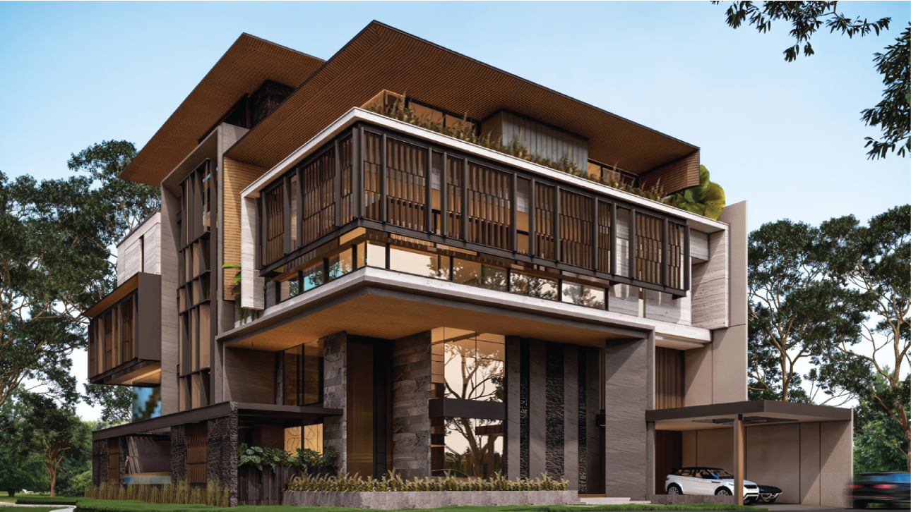

Residensial Mewah · PIK2 & Jakarta
Design-Build — struktur, arsitektur & interior, MEP lengkap dan semua material dalam satu kontrak. Dirancang bersama Beta Design Studio. Minimal 1.000 m².
Yang Membedakan Kami
Kebanyakan kontraktor membangun sesuai standar minimum. Kami membangun untuk performa.
Lingkup Pekerjaan
Filosofi Material

Portofolio — LBR R-019
Siap Mulai — LBR K-01
WhatsApp & Telepon: +62 821 1095 2505
Email: dixon@ibkkonstruksi.com
Pluit, Jakarta Utara · Kantor 6 Lantai